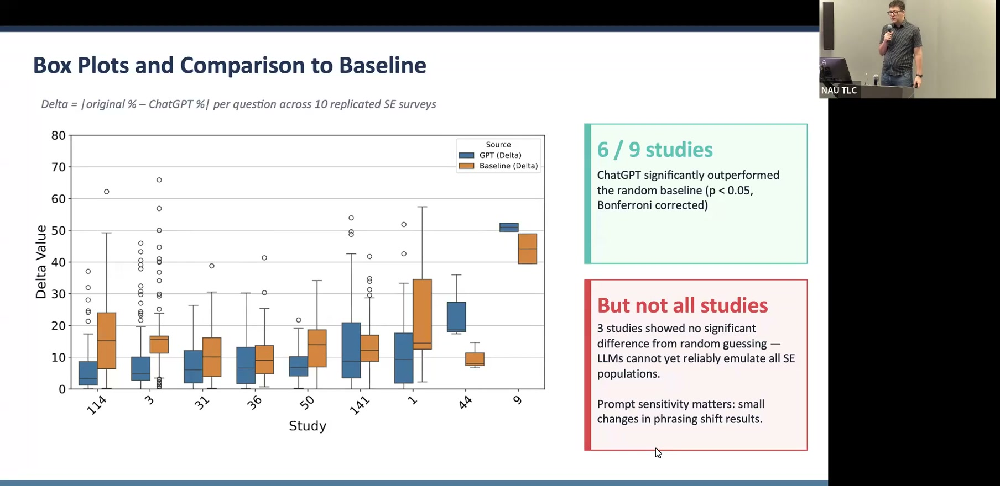

Can AI Generate Qualitative Data for Software Engineering Research?
Testing whether LLMs can serve as human surrogates in surveys, interviews, and qualitative coding tasks.
Presented by Marco A. Gerosa, Professor of Computer Science, Northern Arizona University
About This Project
Qualitative research in software engineering relies on surveys, interviews, and manual coding — methods that are slow, expensive, and hard to scale. Response rates for developer surveys routinely fall below 10%, certain demographics remain chronically under-represented, and recruiting professional programmers for studies is increasingly difficult. This project asks whether large language models can serve as viable stand-ins for human participants, generating synthetic qualitative data that mirrors what real populations would report.
Using a "mega-persona" prompting technique — instructing GPT-4 to respond as a population of N professionals with specified demographic characteristics — the team replicated 10 published software engineering surveys from top venues (ICSE, FSE, ASE). In 7 of the 10 studies, LLM-generated response distributions fell within 10 percentage points of the original human data, and in 6 of 9 analyzable studies, ChatGPT significantly outperformed a random baseline (p < 0.05, Bonferroni corrected). The findings are promising but context-dependent: structured Likert-scale questions produced more reliable results than open-ended items, and training data contamination remains an open ethical and methodological concern. The team is now expanding to 50+ surveys, interview surrogates, and LLM-assisted qualitative coding, with an NSF proposal in development.
Project Highlights

